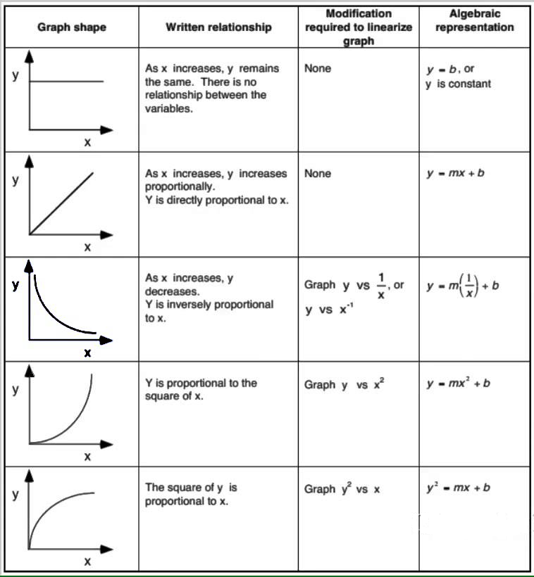

When you wish to study the behavior of a physical system, a common technique to use is to choose a pair of quantities whose relationship you wish to examine, and, keeping everything else fixed, to vary one and to measure the second as you do so. A plot of the quantity you measure (dependent variable) vs. the one you varied (the independent variable), allows you to see the shape of the mathematical relationship between those two variables. If you can then fit the data to a mathematical function, you will have a good sense of what that relationship is. You might also be able to confirm that the data fit an equation that you had proposed before you did the experiment. If the data form a straight line, then such a fit is fairly simple. In 6A, you performed such a fit for the force data you generated in the experiment with the air track. As you might guess, though, the relationships between physical quantities are often nonlinear, and, in fact, they could take any of a number of forms. While it might be possible to identify a nonlinear function by looking at the shape of a plot, and while it is possible to perform fits to nonlinear functions, it is generally easier to fit to a straight line. If we can get our data into linear form, such a fit can provide information that tells us the form of the original function.
If we know the form of the original equation, then performing the appropriate operation on the x or y values and then plotting, yields a straight line. For example, if the function is , then plotting y vs. yields a straight line, if , then plotting y vs. gives a straight line, and so on. The figure below shows some examples.

From AP Physics 1 Online, by John Horwat, at https://sites.google.com/site/apphysics1online/appendices/2-data-analysis/graph-linearization
If we don’t know the form of the equation, there is something else that we can do.
We note here the rules of logarithms:
Thus, if we have an equation
we can take the logarithm of both sides:
We thus obtain a linear equation with slope b and intercept log(a). The slope is the exponent in the original equation, and the intercept is the logarithm of the proportionality constant (which we can recover by taking its antilogarithm, a = , if we are using common logarithms, or base 10 logarithms.). Manipulating data in any of these ways to cause them to fall on a straight line is often called linearizing the data. The simulations below will allow you to plot functions of various shapes, and to see what happens when you perform the types of linearization described above.
Kelly's simulation goes here.
Kelly's second simulation goes here.
In this lab, you will use logarithms to linearize data from a set of astronomical observations, and see what this tells you about the equation that describes their relationship.
REPORT REQUIREMENTS: For your report you should explicitly answer each question in the report. You should also include all your work for the exercises, which will consist of one table and two plots.
As early as the time of the ancient Greeks, people sought to understand the motion of the planets. Ptolemy (ca. 85 - ca. 165, Greek astronomer, geographer) proposed a geocentric system, that is, one in which the earth is stationary and all other bodies revolve around it. For this model to work, though, the planets must take very complicated paths; they must travel in epicycles – small circular paths superimposed on their larger circular orbits. In the sixteenth century, Nicolaus Copernicus (1473-1543, Polish astronomer) proposed a heliocentric theory, in which all the planets, including earth, revolved around the sun, and the earth rotates on its axis. (Oddly enough, the inspiration for this may have come from a model proposed by Aristarchus of Samos (ca. 310 B.C.E.- ca. 230 B.C.E.), but which never gained broad acceptance). Copernicus’s model was much simpler than Ptolemy’s, but it still had problems. Because Copernicus held that planets traveled in exact circles, he still needed to use epicycles to explain their observed motion. There was also need for better information regarding the motion of the planets. This would soon be provided by Tycho Brahe (1546-1601, Danish astronomer), who made very careful and precise observations of the motions of the planets in the solar system (without a telescope!). Some time later, Johannes Kepler (1571-1630, German astronomer), who had been Brahe’s assistant, analyzed these data and arrived at his Three Laws of Planetary Motion. His Third Law relates the orbital periods of the planets to their mean distance from the sun. This distance is equal to the semimajor axis of the orbit, which according to his First Law, is an ellipse with the sun at one focus. Later, when Newton was working on his Law of Universal Gravitation, he found that from this law, he could derive Kepler’s Third Law. Kepler’s Third Law takes the form
which can also be written as
where T is orbital period, a is the semimajor axis of the orbit, and , where G is the gravitational constant (), and M is the mass of the sun ( kg). Strictly speaking, the denominator should be , but the sun is so much more massive than the planets, that for describing the orbital motion of the planets, the equation is accurate without the planetary mass. m and n are integers. We will give the period in years, and the semimajor axis in a.u. (astronomical units; 1 a.u. = km).
We will not use Tycho Brahe’s data. We will use data from the NASA Planetary Fact Sheets.
| Planet | Orbit Semimajor Axis (a.u.) | Period (years) |
|---|---|---|
| Mercury | 0.3871 | 0.24084 |
| Venus | 0.7233 | 0.615188 |
| Earth | 1.000 | 1.00000 |
| Mars | 1.524 | 1.8808 |
| Jupiter | 5.204 | 11.8618 |
| Saturn | 9.582 | 29.4566 |
| Uranus | 19.20 | 84.0107 |
| Neptune | 30.05 | 164.78 |
| Pluto* | 39.48 | 247.94 |
Yes, we know that Pluto is no longer considered a planet. It does, however, orbit the sun, and it obeys the same laws as the planets.
REPORT REQUIREMENTS: For your report you should explicitly answer each question in the report. You should also include all your work for the exercises, which will consist of one table and two plots.
Exercise 1
Use Excel, Google Sheets, MATLAB, or any other data processing package of your choice to create your own version of the table above.
Exercise 2
a. Make a plot of the data in your table. Plot orbital period vs. orbit semimajor axis.
b. However the plot looks, include a best-fit (straight) line.
Make sure that your graph has all of the components of a good plot in order to receive full credit.
Question 1
a. Does this graph look linear, quadratic, exponential, or something else?
b. How can you tell?
c. Does it make sense to perform a linear fit with this data set? Why or why not? (Don’t use in your answer.)
Exercise 3
According to the rules of logarithms given above, take the log of both sides of Equation 4.
Remember that you can write Equation 4 either as or , and that the latter is equivalent to . These are all equivalent, and the units work no matter which way you write the equation. For the purposes of getting the equation into linear form, with a slope and an intercept, the second (and third) way may be more convenient than the first.
Question 2
Your result from Exercise 3 should look something like:
Make a similar table to the one below in your report, and fill in the missing column with the equivalent parts from your result from Exercise 3.
| Name | Variable | Variable |
|---|---|---|
| Dependent Variable | y | |
| Independent Variable | x | |
| Slope | m | |
| Y-Intercept | b |
You should see that had you chosen the first form of Equation 4, after you took the logarithm of both sides, dividing both sides by m (in Equation 4 or the equations in the note in exercise 3) would have given you the same result.
Exercise 4
In the data table you created earlier, add two more columns. These should be for the logarithm (base 10) of each of your two variables. Fill in the table with the appropriate values.
Note: If you use a computer to calculate the logarithms, in many cases, the “LOG” function is either the natural logarithm (ln) or log base 2 by default. If you are using Excel or Google sheets, you will want to use the LOG10 function, not the LOG function.
As long as you use the same base when you take the antilog to find the proportionality constant, this makes no difference. If, however, you need to compare the actual logarithms of the data, or of the constant, to those calculated by someone else, you will need to use the same base that that person did.
Therefore, for consistency, please make sure to use log base 10.
Exercise 5
Now make a plot of the data in these two columns. (Be sure to keep the relationship of the two variables the same. That is, plot log(y) vs. log(x).) Again, make sure that your graph has all of the components of a good plot in order to receive full credit.
Question 3
a. Does this graph look linear, quadratic, exponential, or something else?
b. How can you tell?
c. Does it make sense to perform a linear fit with this data set? Why or why not? (Don’t use in your answer.)
d. Compare and contrast this plot with the previous one.
Exercise 6
Create a best-fit line for the new log-log plot.
Question 4
a. What is the equation for your line of best fit?
b. According to this equation, what is the value of the exponent (assuming that you cast the equation to give only one variable, i.e. a, with a nonunity exponent), and thus, what are the values of m and n in the exponent in your original equation? (If you would prefer to write the equation the other way, what are the respective exponents for T and a?)
c. What is the value of , and thus K?
For the equation for Kepler’s Third Law, although the power relationships do not depend on what units we choose for our variables, the proportionality constant, and hence its logarithm, does. Thus, a note about units and their conversion is in order.
As noted above, for the period, T, we used years, for the semimajor axis of the orbit, a, we used a.u. (1 a.u. = km). , where G is the gravitational constant (), and M is the mass of the sun ( kg). You may have noticed that years and a.u. are not SI units. The SI units for these values are seconds and meters. As it turns out, if you make the conversion from seconds to years, and from meters to a.u., K = 1; when you multiply and divide K by the appropriate conversion factors, raised the the appropriate powers, the result is unity. You should have found this in your answer to question 4. c.
Question 5
a. Had we used SI units, that is, seconds for the orbital period and meters for the semimajor axis, instead of years and a.u., if we were to combine both conversion factors into one, to use to multiply T, by what factor should you have had to multiply the values for the periods? (Note that when you arrive at your conversion factor, you can check it by evaluating .)
b. How would this have changed the intercept of your log-log graph? What would its value have been?
Exercise 7
In the introduction, we noted that if you know the function, then if you manipulate the x variable according to that function, you get a linear plot. For example, if , then plotting y vs. x gives a curved line, but plotting y vs. yields a straight-line plot with slope a. Thus, for your planetary orbital data, if you plot either T vs. , or vs. , you should get a straight line (with slope K = 1).
a. According to the two choices above, in your data table make either one or two more columns, and do one of the following:
Make one additional column for , and fill it appropriately. Now plot T vs. .
Make two additional columns, one for and one for , and fill them appropriately. Now plot vs. .
Whichever plot you choose to do, include a best-fit line. As usual, make sure that it has all the characteristics of a good plot.
Question 6
a. How does this plot look? Does it fit a straight line?
Until the work of Brahe and Kepler, there was great confusion regarding the motion of the planets. Also, our understanding of gravity was limited, and until Newton, no one had imagined the possibility that gravity could act not only close to earth, but over astronomical distances as well. Newton’s Law of Universal Gravitation provided a deeper understanding of Kepler’s laws, and together these formed part of the bedrock of classical physics. We hoped that fitting the data associated with the motion of the planets would provide a pleasant exercise.